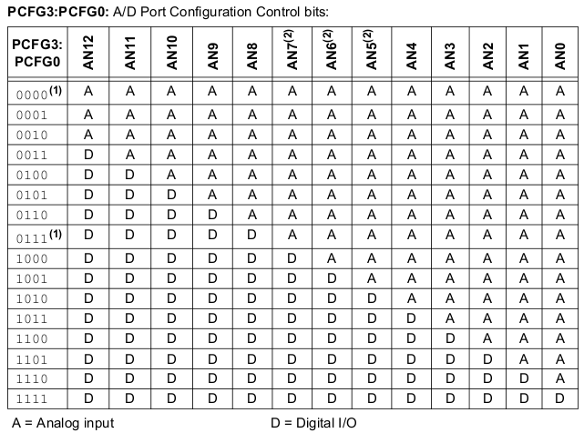
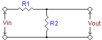
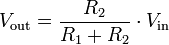

ADC value sent on USB
Few words about ADC pin selection and voltage measurement. There are two main groups of microcontrollers regarding to analog pin selection (Sebastien Lelong wrote a nice tutorial here):
1. Analog dependent pin selection
The first group (an older one) have dependant analog pin selection. What mean that? If you select, by example, AN3 as analog input, all analog pins bellow it, become analog pins. Let's presume that we have only 4 pins at our disposal and all are mixed with analog channels:
Pin name - RA0/AN0 - RA1/AN1 - RA2/AN2 - RA3/AN3
One of them we need to use it as analog input and the other three as digital input to count events or as key handlers. If we select AN3 as analog input, then all lower pins which are mixed with analog channels become analog inputs making impossible to use the other three pins as digital input. So, in this case, you are forced to use RA0/AN0 as analog input and you can use RA1-RA3 pins as digital inputs.
Note: As an observation, a pin selected to be analog input can be also digital output without any setup.
Unfortunately, 18F2550/18F4550 microcontrollers are members of this group so, we have to take care when we design our electronics. This is an image from the datasheet about dependent analog pin selection:

AN5, AN6 and AN7 pins are available only on 18F4550 microcontrollers.
On FreeJALduino boards digital pins are noted as Dx and analog channels are noted as Ax, where x is the pin number regarding to Arduino notation.
2. Analog independent pin selection
Ok, the secong group permit independent analog input pin selection. This mean that we can select AN3 as analog input without affecting the status of the pins bellow him. Microchip has started modernizing his microcontrollers, offering new variants for any old model. I'm expecting the same thing for 18F2550/18F4550 microcontrollers.
I will not insist on this, the Sebastien's tutorial covering very well the both cases.
3. Measuring volts with microcontrollers using 1024 bit resolution
Analog pins of 18F2550/18F4550 microcontrollers accept a maximum of 5Vcc as input voltage. For higher voltage we need to use a voltage divider. Also, the maximum impendance on analog inputs is 2.5 Kohms.
3.1. The voltage divider
We will use only a simple divider, based on this schematic:

The general formula is

but for a complete reference, go to Wikipedia. Anyway, if you are not good at math or tired of math calculations, try this online calculator, is simple to use it.
To calculate the impendance, use this formula:
Z=R1*R2/(R1+R2)
4. A practical example
It is the same example used when we forced USB-CDC driver installation (see the chapter 6 from that page). So, we will continue with JAL program description. But first, a short resume. We planned to have a maximum of 55Vcc voltage to measure which must correspond to 5Vcc on ADC channel and we made calculations to obtain the values for R1 resistor (R1=10K) - use the online calculator for the three known values, Vin=55Vcc, Vout=5Vcc and R2=1K (1000 ohm).
4.1. The JAL program description
USB_ADC.jal example can be found in
C:\jal\project\FreeJALduino\FreeJALduino5\examples\
The application will measure voltage on A0 (our board definition for RA0/AN0) pin and will show on Windows terminal two values using USB Serial connection: the ADC digital value (which can have values from 0 to 1023) and the calculated Voltage value.
include freejalduino4 -- FreeJALduino4 pinout layer for the last board model
-- include libraries
include usb_serial
include print
include format
include delay
The necessary libraries for our application: pinout layer definitions which also have processor, speed and pragma bootloader definitions, USB Serial library, print and format libraries for printing strings and formated numbers on terminal, and the one required for delays.
var dword Value
var word AD_RESULT
var word Volts
-- var byte Millivolts
const byte str1[] = " Volts\n\r"
Variables and constant definitions. Value is a double word variable container which will store our primary voltage calculation (32bit integer math calculation - I really wanted to have this, although a 16bit math is possible and is doing faster). Volts variable will be used to display a formated value on Terminal. AD_RESULT store the ADC digital value.
enable_digital_io() -- first, all pins set to digital
This function is used to set all pins to digital and is a good starting point on every program you want to write. This is required because as default, all microcontroller pins which have analog channels assigned are set as analog inputs.
const bit ADC_HIGH_RESOLUTION = true -- 10bit resolution
const byte ADC_NVREF = 0 -- no voltage reference
const byte ADC_NCHANNEL = 1 -- how many ADC channels we are using,
-- always starting the count from A0 (RA0/AN0)
-- This will automatically set A0 as analog input
const word ADC_RSOURCE = 909 -- impendance in ohms (R1*R2/(R1+R2))
These constants are required by ADC library and define resolution, voltage reference, the number of analog inputs used and the impendance of the voltage divider, required by library to calculate the exact time for ADC aquisition (see Jallib API documentation). The constants must be defined before including the ADC library. Read the comments form the code
-- then, load the ADC library
include adc
-- Initialize ADC
adc_init()
Finally, ADC library is included and initialization is made.
-- initialize the USB serial library
usb_serial_init()
This will initialize the USB Serial connection. From this moment, you must "push" continuously the USB at a maximum time of 10ms interval. otherwise, the USB connection will be lost and Windows will report that your USB device is not working properly. All yyou can do is to reset the board and rewrite the application properly.
-- start main loop
forever loop
We start the main loop where our real program is acting.
usb_serial_flush()
This is how you keep USB connection alive when you don't have an USB activity (doing other operations than reading or writting on USB).
AD_RESULT = adc_read(0)
Start analog reading on A0 pin.
print_word_dec(usb_serial_data, AD_RESULT)
usb_serial_data = " "
Print the ADC digital value on Terminal via USB.
-- Value = 537 * AD_RESULT
Well, this is a disabled line but is here as reference. It was my first atempt on doing 32bit math but didn't worked because I didn't read the JAL documentation properly. There are two things to discuss about this disabled line:
The first thing: What mean "537" value and how I obtained it? I used a desktop calculator (not a PC) to obtain the required values. Ok, we have a maximum of 55Vcc which correspond to 1024 "divisions" on ADC.
55 / 1024 = 0.053710938
I removed the zero values and kept the first three non zero values, and those are 537 (because we can't use floating point math). So, for a maximum of 1024 ADC digital value, we have:
537 * 1024 = 549888
We will divide this by 100 because we need a maximum of 4 digits starting from left to right
549888 / 100 = 5498.88
but we get only the integer part, 5498 which we display it as a formated string of 54.98 being our maimum calculated volt value. As you see, here is a little error but a convenient one.
The second thing: Why I had 16bit math instead of the required 32bit one? Is because how JALv2 compiler is working. When a math operation is requested, the compiler will not look at the type of variable container and not even at size of the numbers. It will look only at operands types to figure out if it will use an 8bit(biggest operand being byte type), 16bit(biggest operand being word type) or 32bit(biggest operand being dword type) math calculations and will choose the bigger type from them. If you specify an operand in clear numbers, without a named type, then his type is considered as being UNIVERSAL which is signed 32bit. If your both operands are specified in clear numbers, then you will have the required 32bit math. If only one operand is specified in clear numbers (UNIVERSAL type) and the other operand is a named type, then the UNIVERSAL operand will get the type of the second operand which will be considered the biggest type. So, the response to my question is simple. My frist operand was UNIVERSAL (clear numbers) but was changed to the type of the second operand because this was a typed one (AD_RESULT is a word type variable) which was considered the biggest type operand. As a direct result, having a 16bit math operation instead of the required 32bit one. Then, the correct line is ...
Value = dword(537) * AD_RESULT
.. the above one :-D . This time, the first operand is casted as dword type and because is the biggest type from the two operands, a 32bit math operation is triggered. Understood? Well, I didn't from first time... Ah, almost forgot: we have only integer math operations.
Volts = Value / 100
We shorten the value to a maximum of 4 digits which will be displayed as 99.99 formated number (maximum being 55.00 volts theoretically). To myself: Should I insert a protection against "Division by zero" error?
format_word_dec(usb_serial_data, Volts, 4, 2)
print_string(usb_serial_data, str1)
We display the calculated Volt value as a formated string (as stated above).
for 100 loop -- delay 1 second (a little more than)
usb_serial_flush()
delay_1ms(10)
end loop
I inserted one second delay just as an example on how to use such long delays without loosing the USB connection.
end loop
Closing the forever loop. Is also the end of the file but not the end of program which is executed forever, until no power or reset event.
Advices
Always use a multimeter to measure your resistors to know the exact output voltage for accurate results. Never choose tight voltage ranges for your application. By example, I will never have a 55Vcc as a maximum value. My application is ranging between 10Vcc and a maximum of 19Vcc. The 12Vcc battery can have a voltage in 10Vcc-14.4Vcc range. My solar panel have a maximum of 19Vcc voltage and I expect the same from my wind turbine.